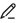

AP Wired Port
Context
You can configure the wired port on an AP to deploy a Layer 2 network or directly associate with STAs.

This function can be configured only when a WAC running V600 is deployed on the network.
Procedure
- Creating an AP wired port entry
- Modifying an AP wired port entry
- Choose . The AP Wired Port List page is displayed, as shown in Figure 1.
- Click

next to an AP wired port. The Modify dialog box is displayed. - Modify parameters as required.
- Click OK.
- Deleting an AP wired port entry
- Choose . The AP Wired Port List page is displayed, as shown in Figure 1.
- Select the AP wired port to be deleted and click Delete or . The system asks you to confirm the deletion.
- Click OK.